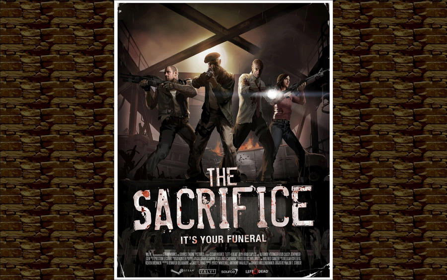
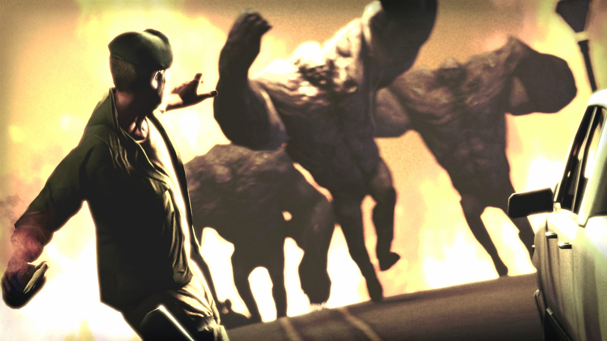

La campaña "The Sacrifice" inicia en unos muelles, donde los sobrevivientes originales: Bill, Zoe, Francis y Lewis se encuentran después de escapar de los militares después de que trataron de matarlos.

Su meta es llegar a un barco que les llevará a un lugar seguro, una isla desertica. Esos muelles están llenos de contenedores, grúas y almacenes lo que le da a los infectados muchos lugares donde esconderse. Los sobrevivientes deben llegar a un pequeño barco que aún funcionaba en el puerto.
Después de conseguir un barco lograron ir río arriba, pero se vieron obligados a desembarcar y atravesar barcazas y plataformas flotantes, su principal problema es encontrar una manera de activar una grúa para mover restos del muelle que fueron destruidos para poder escapar del barco.
Al llegar a un puerto industrial, tienen que atravesar grandes almacenes donde se encuentra la mayor ola de infectados a la que se han enfrentado. Para que todos los sobrevivientes puedan escapar uno superviviente debe ser sacrificado. Bill decide quedarse y proteger el generador que estaba dando paso a su escape de los zombies mientras sus compañeros empiezan a subir al bote. Su sacrificio permite a Zoe, Francis y Lewis escapar del puerto en el bote, dejando atrás a Bill completando su heroico sacrificio muriendo a manos de varios Tanks y dando fin al primer juego.
